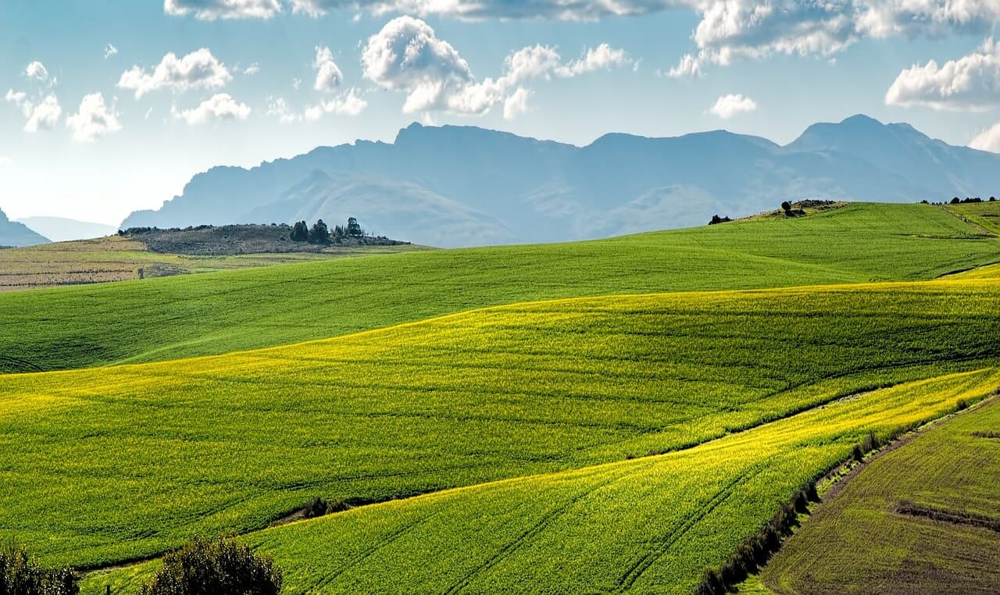

A agricultura orgânica é uma prática que está transformando o mundo ao promover um modelo de produção sustentável e livre de produtos químicos nocivos, neste artigo, exploraremos as ações que impulsionam essa revolução verde, destacando seus benefícios ambientais, sociais e econômicos, com ênfase na preservação da saúde do solo, no respeito à biodiversidade e na promoção de alimentos mais saudáveis, a agricultura orgânica tem se mostrado uma alternativa viável e essencial para garantir um futuro sustentável para as gerações presentes e futuras.
A agricultura orgânica apresenta uma série de benefícios significativos que a destacam como uma solução sustentável para os desafios enfrentados pela agricultura convencional, aqui estão alguns dos principais:
O solo é um recurso natural vital para a produção de alimentos, e a agricultura orgânica prioriza sua preservação, ao evitar o uso de agrotóxicos e adubos químicos, essa prática ajuda a manter a fertilidade do solo, promovendo a saúde dos microrganismos e preservando a estrutura física e química necessária para o crescimento das plantas, isso resulta em solos mais ricos em nutrientes, melhor capacidade de retenção de água e maior resistência à erosão.
A agricultura orgânica valoriza a biodiversidade, reconhecendo a importância dos ecossistemas naturais para a saúde do planeta, ao evitar o uso de pesticidas sintéticos, essa prática protege insetos polinizadores, aves e outros animais que desempenham papéis fundamentais na manutenção da diversidade biológica, além disso, a preservação de habitats naturais em áreas agrícolas orgânicas contribui para a sobrevivência de espécies ameaçadas e promove a resiliência dos ecossistemas em geral.
A agricultura orgânica busca oferecer alimentos mais saudáveis e nutritivos, a ausência de resíduos químicos em produtos orgânicos beneficia a saúde humana, reduzindo a exposição a substâncias potencialmente prejudiciais, além disso, estudos têm mostrado que alimentos orgânicos podem conter níveis mais altos de antioxidantes e nutrientes essenciais, como vitaminas e minerais, contribuindo para uma alimentação mais equilibrada e saudável.
A agricultura convencional frequentemente resulta em impactos ambientais negativos, como poluição da água e do solo, além de emissões de gases de efeito estufa, a agricultura orgânica adota práticas que minimizam esses impactos, a utilização de técnicas de compostagem, rotação de culturas e manejo adequado de resíduos contribui para a redução da contaminação de recursos hídricos, minimiza a emissão de gases poluentes e ajuda a mitigar a mudança climática.
A agricultura orgânica pode impulsionar o desenvolvimento rural sustentável, fornecendo oportunidades econômicas e sociais para comunidades agrícolas, ao adotar práticas orgânicas, os agricultores podem reduzir os custos de produção a longo prazo, melhorar a produtividade e obter preços mais justos para seus produtos, além disso, a agricultura orgânica promove a criação de empregos locais e fortalece a resiliência das comunidades rurais, contribuindo para a redução da pobreza e para a construção de uma sociedade mais equitativa.
A agricultura orgânica representa um compromisso com um futuro mais sustentável, seus princípios e práticas estão alinhados com os Objetivos de Desenvolvimento Sustentável (ODS) estabelecidos pelas Nações Unidas, especialmente os relacionados à erradicação da fome, à preservação dos ecossistemas e à promoção de uma agricultura sustentável, ao investir na agricultura orgânica, estamos investindo em um mundo mais saudável, mais justo e mais equilibrado para todos.
A medida que mais agricultores, consumidores e governos reconhecem os benefícios da agricultura orgânica, seu impacto positivo continua a se espalhar pelo mundo, para garantir um futuro próspero e sustentável, é essencial que apoiemos e promovamos essa forma de agricultura, adotando práticas responsáveis e fazendo escolhas conscientes em nossa alimentação diária, juntos, podemos cultivar um mundo melhor, cultivando a agricultura orgânica.